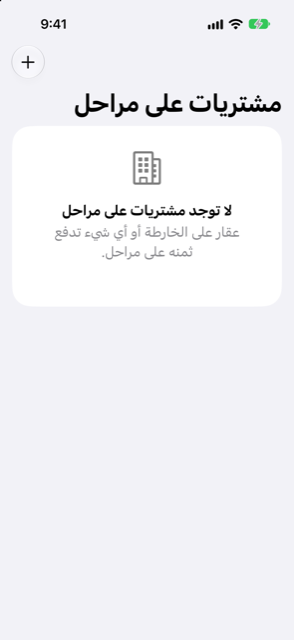

الدليل › استثمارات
مشتريات على مراحل
عقار على الخارطة أو أي شيء يُدفع على مراحل.
المشترى على مراحل هو سجلّ Damla لشيء تدفع ثمنه على مراحل بتواريخ محددة، كشقة تُشترى على الخارطة. يعرض ما دفعته وما لم يأتِ بعد. وتدخل الدفعات القادمة في توقعاتك، فيكون المال جاهزًا عند استحقاق كل مرحلة.

متى تستخدمه
- تشتري عقارًا على الخارطة ويطلب المطوِّر دفعات في تواريخ معلومة.
- تدفع ثمن أي شيء آخر على مراحل، مثل قطعة أرض أو طلبية كبيرة تُدفع على دفعات.
- لقد دفعت شيئًا من ثمنه سلفًا، مثل دفعة أولى، وتريد احتسابه.
- تريد أن يصبح العقار حيازة في صافي ثروتك عند التسليم.
أين تجده
افتح الخطة ثم مشتريات على مراحل. ويمكنك أيضًا الوصول إلى مشترى على مراحل من الحسابات ضمن الأصول.
خطوة بخطوة
أنشئ واحدًا
- في شاشة مشتريات على مراحل، اضغط على إضافة (زر زائد).
- أدخل اسمًا، واسم المطوِّر أو البائع (اختياري)، والسعر الإجمالي، والحساب الذي تُدفع عادةً منه.
- ضمن مدفوع قبل Damla، أدخل ما دفعته بالفعل في مدفوع مسبقًا، وتاريخه في تاريخ الدفع. يُعَدّ ذلك مدفوعًا، ولا يتغير رصيد أي حساب.
- ضمن دفعات قادمة، أضف كل دفعة مؤرَّخة تعرفها: تاريخ الاستحقاق والمبلغ. واضغط على إضافة دفعة أخرى لكل دفعة إضافية.
- اضغط على حفظ.
تعرض صفحة المشترى بطاقة المدفوع حتى الآن فيها شريط تقدم، والسعر، وما دُفع، وما هو المجدوَل، وما لم تُجدوَل بعد.
حافظ على تحديثه
- افتح المشترى.
- اضغط على دفعة لتغيير تاريخها أو مبلغها، أو اسحبها لحذفها. ولإضافة دفعة، اضغط على إضافة دفعة.
- اضغط على صف السعر لتغيير السعر الإجمالي.
- إذا نسيت دفعة دفعتها قبل أن تبدأ باستخدام Damla، فاستخدم قسم مدفوع مسبقًا قبل Damla: أدخل المبلغ والتاريخ، ثم اضغط على حفظ.
- عندما تسدد قسطًا من حساب، استخدم تسجيل دفعة: أدخل المبلغ، واختر مدفوع من، واضغط على حفظ. الدفعات المسجَّلة تسدِّد أقدم الدفعات المجدوَلة أولًا.
تعرض كل دفعة في القائمة تاريخها ومبلغها وما لم يُسدَّد بعد منها: مدفوعة عندما لا يتبقى شيء، أو المبلغ المتبقي بالأحمر مع مستحق الآن إذا فات موعد استحقاقها.
التسليم
- في صفحة المشترى، اضغط على تم التسليم: انقله إلى الاستثمارات.
- أدخل القيمة السوقية اليوم في خانة قيمة العقار.
- يخبرك Damla بمقدار الدفعات المجدوَلة التي ستُزال من توقعاتك، أو يقول إنه لا يتبقى شيء للدفع.
- اضغط على نقل إلى الاستثمارات للتأكيد.
يتوقف المشترى عن كونه مشترى على مراحل ويصبح حيازة: ما دفعته يبقى تكلفته، وتصبح القيمة السوقية التي أدخلتها قيمته. انظر العقارات والسيارات.
من الجيد أن تعرف
مقالات ذات صلة
هل هناك شيء غير واضح أو ناقص؟ اكتب إلى support@raveniq.ai واذكر الصفحة.